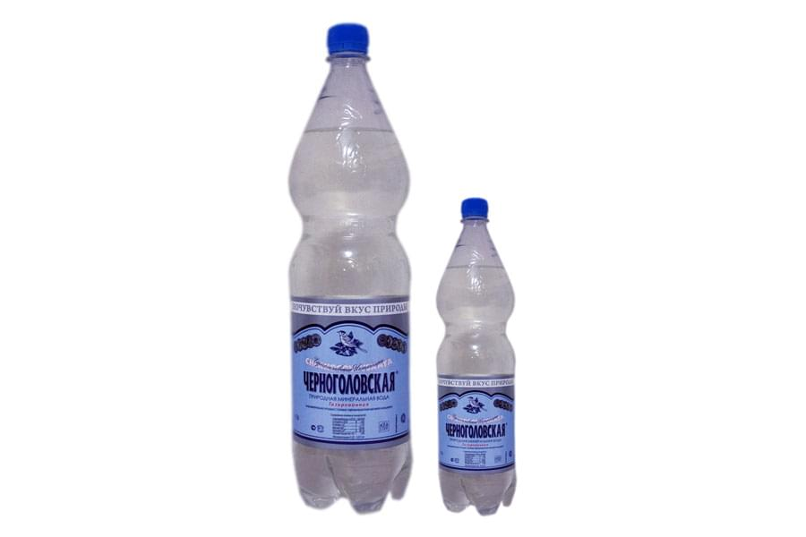
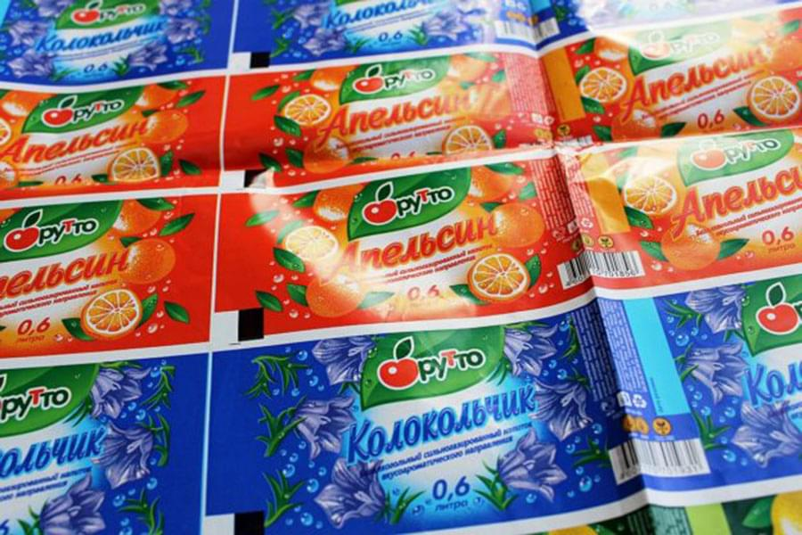
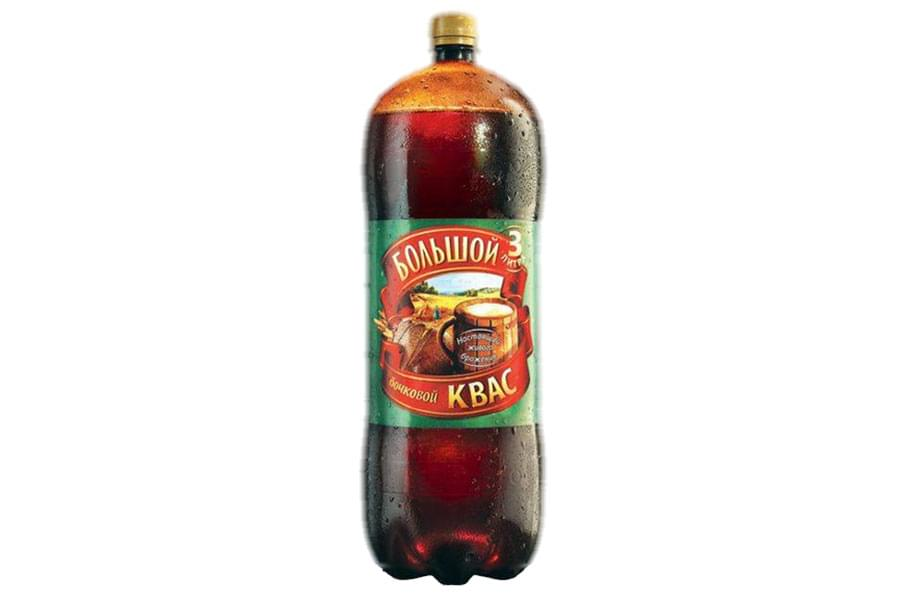
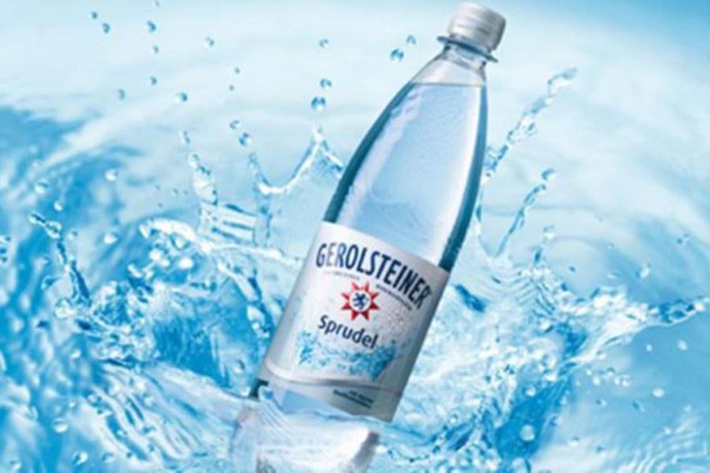
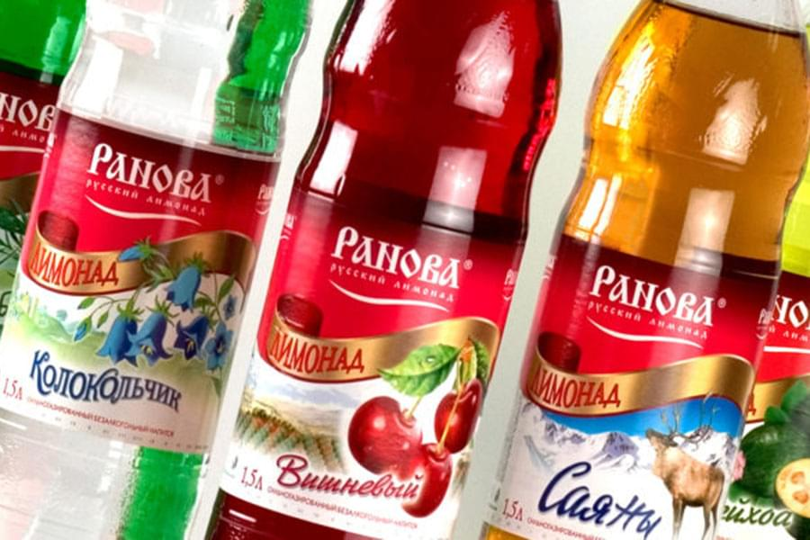
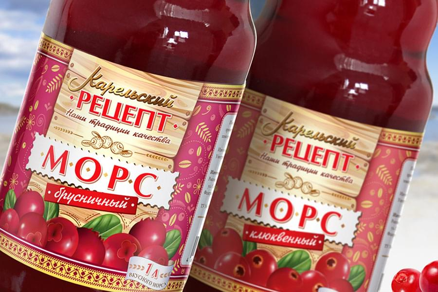

<!--#set var="title" value="Полипропиленовая этикетка на ПЭТ • НекстПринт" -->
<!--#include virtual="/parts/header.html" -->
<section class="brand">
    <div class="container">
        <div class="title title_brand"><h3>Полипропиленовая этикетка на ПЭТ</h3></div>
        <div class="swiper-container mySwiper">
            <div class="swiper-wrapper">
              <div class="swiper-slide">
                <a data-fancybox="gallery" data-src="images/dist/pet-label-1.jpg">
                    
                </a>
              </div>
              <div class="swiper-slide">
                <a data-fancybox="gallery" data-src="images/dist/pet-label-2.jpg">
                    
                </a>
              </div>
              <div class="swiper-slide">
                <a data-fancybox="gallery" data-src="images/dist/pet-label-3.jpg">
                    
                </a>
              </div>
              <div class="swiper-slide">
                <a data-fancybox="gallery" data-src="images/dist/pet-label-4.jpg">
                    
                </a>
              </div>
              <div class="swiper-slide">
                <a data-fancybox="gallery" data-src="images/dist/pet-label-5.jpg">
                    
                </a>
              </div>
              <div class="swiper-slide">
                <a data-fancybox="gallery" data-src="images/dist/pet-label-6.jpg">
                    
                </a>
              </div>
            </div>
            <div class="swiper-pagination"></div>
            <div class="swiper-button-prev"></div>
              <div class="swiper-button-next"></div>
        </div>
        <p>
            На данный момент времени существует большое количество различной продукции, которая переполняет магазинные полки супермаркетов и торговых центров. Потенциальному покупателю достаточно сложно сориентироваться среди представленного разнообразия, а производителям еще сложнее, потому что им хочется привлечь внимание именно к своему бренду.
        </p>
        <p>
            Как показывают статистические данные свыше 30% совершаемых покупок делается спонтанно. Покупатель не планировал приобретать какой-либо вид продукции, но правильно созданная по маркетинговым правилам полипропиленовая этикетка притягивает клиента, и он отдает предпочтение данному продукту. 
        </p>
        <p>
            Мы рекомендуем наносить на этикетку логотип организации, текст, дополнительные элементы и главной составляющей является высококачественная графика. Наша компания предлагает своим клиентам <strong>полипропиленовую этикетку на ПЭТ</strong> бутылки. Материалы, которые применяются в процессе производства:
        </p>
        <ul>
            <li><i class="fa fa-check"></i><h5>ВОРР жемчужный (белый) 35-38 мкм;</h5></li>
            <li><i class="fa fa-check"></i><h5>ВОРР прозрачный 35 мкм;</h5></li>
            <li><i class="fa fa-check"></i><h5>ВОРР металлизированный 35-38 мкм.</h5></li>
        </ul>
        <p>
            Мы плодотворно сотрудничаем с крупнейшими поставщиками этикеточной пленки на территории России: BIAXPLEN; EUROMETFILMS.
        </p>
    </div> 
</section>
<!--#include virtual="/parts/consultation.html" -->
<!--#include virtual="/parts/footer.html" -->